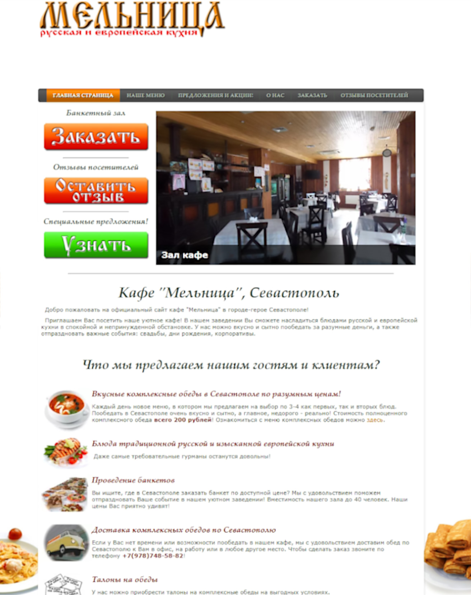

Разработка сайта
для кафе “Мельница”
на CMS Joomla!
Ссылки на проект
О проекте
Сайт небольшого, но уютного кафе в городе-герое Севастополе.
Детали
-
Клиент:Кафе “Мельница”
-
Проект:Кафе “Мельница”
-
Сайт:
-
Верстка:Адаптивная верстка, HTML5, CSS3, Joomla!, JavaScript, PHP, MySQL.
-
Особенности:Мобильная навигация, выпадающее меню, форма обратной связи, слайд-шоу, фотогалереи, ajax, валидация форм, лайтбоксы, защита от спама и взлома.
